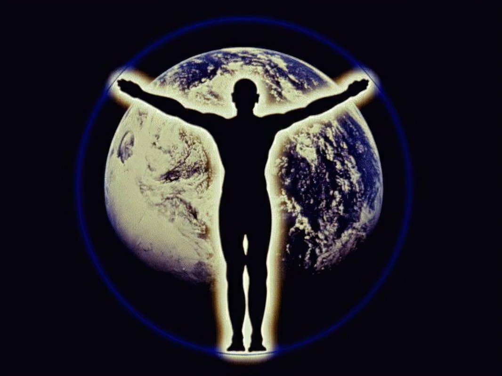
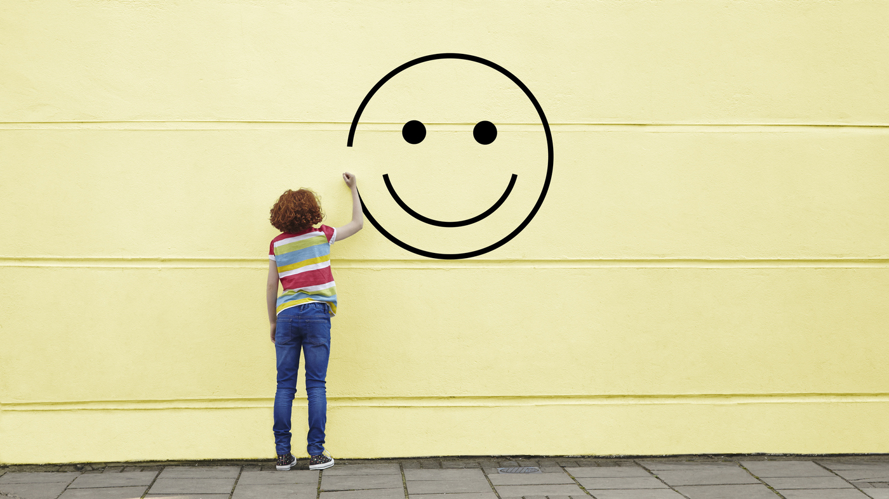

¿Que es el ser humano?
Desde una perspectiva filosófica, el ser humano es un ser complejo y en constante búsqueda de significado y trascendencia. Se le reconoce por su capacidad de razonamiento, conciencia y libertad, así como por su habilidad para reflexionar sobre su propia existencia y su relación con el mundo y los demás. A lo largo de la historia, numerosos pensadores han intentado desentrañar la esencia de lo que somos y nuestro lugar en el universo. Diversas corrientes filosóficas, como el existencialismo, el materialismo, la ética deontológica y el ecologismo, han contribuido a nuestra comprensión del ser humano. En resumen, somos seres multidimensionales, en constante búsqueda de significado y con la capacidad de influir en nuestro entorno y en nuestra propia existencia . La antropología filosófica profundiza aún más en estas cuestiones, analizando la dualidad entre el cuerpo y la mente, y explorando las causas fundamentales de nuestra existencia.

¿Donde esta la felicidad humana?
Pues para muchos puede encontrarse en diferentes cosa, tanto en cosas materiales como inmateriales. Para mi se encuentra en la felicidad en mis amistades y familia, logros personales, experiencias, salud física y emocional, también en las cosas materiales como el la ropa, zapatos y viajes . Ser feliz con todo me lleva a sentirme buen de muchas formas. muchas personas piensan que la verdadera felicidad radica en la gratitud, la aceptación y la conexión con uno mismo y con los demás, pero yo también pienso que en la acumulación de bienes materiales también te ase feliz por que de amor no se vive y las cosas materiales como ropa, viajes o simplemente no vivir de vivir al dia te ase ser una persona mas completa. Eso depende de cada persona esto no siempre es así para todos es diferente y no todos opinamos igual
